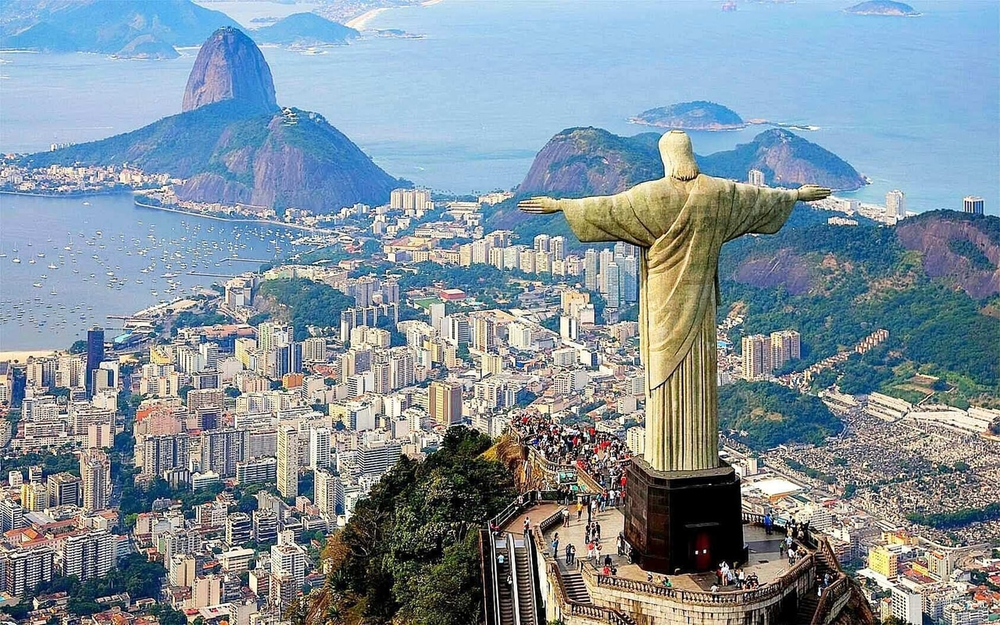

Christ the Redeemer
The statue in Brazil, the most recently constructed of the
new Seven Wonders, stands 125 feet tall. At the time the statue
was commissioned by the Catholic Church in the early 20th century,
over 90 percent of Brazilians were Catholic.
In order for the statue, which weighs 1,145 tons, to support its
massive arm span, it was made with reinforced concrete. It is
considered the largest Art Deco sculpture in the world.
Its location, atop a 710-meter-tall mountain, has left it vulnerable
to weather and damage from lightning. One of the greatest restoration
challenges presented by the statue is matching the color of its six
million stone tiles.